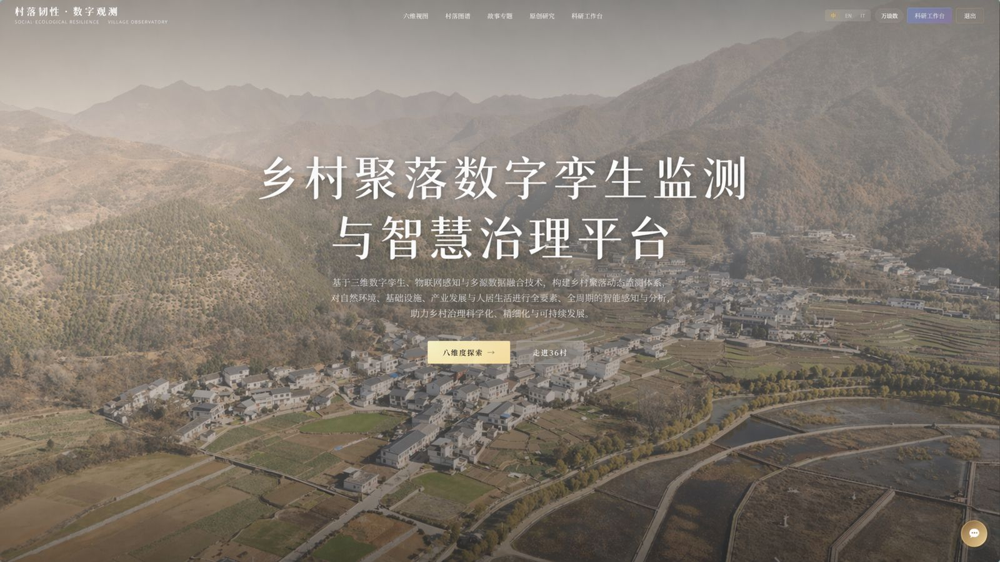

I am a five-year Bachelor of Architecture student (2023 cohort, expected 2028) at the XJTU-POLIMI Joint School, a joint programme of Xi'an Jiaotong University and Politecnico di Milano.
My research brings AI and geospatial methods into architecture: UAV remote sensing, GIS, computer-vision segmentation and interpretable machine learning (XGBoost–SHAP), applied to digital heritage, digital twins, urban analytics and climate resilience of traditional settlements.
I am looking for research-oriented master's / PhD opportunities in AI + Built Environment and Geospatial AI.
Research Interests
AI + Architecture
UAV Remote Sensing
GIS & 3D Viewshed
Computer Vision Segmentation
Interpretable ML (XGBoost–SHAP)
Digital Twin
Digital Heritage
Urban Analytics
Climate Resilience
Urban Tourism
Publications
* Equal contribution (co-first author)
A Multi-Source UAV Framework for Courtyard-Scale Visual–Material Integrity Assessment in Mountain Traditional Villages
UAV orthophoto, 3D mesh and point cloud fusion with YOLO instance segmentation, 3D GIS viewshed analysis and XGBoost–SHAP for 749 courtyards in 9 traditional villages (Shangluo), externally validated in Longnan.
A full-chain assessment and prediction of social-ecological system vulnerability and its driving factors in multi-ethnic regions: Evidence from southwestern Gansu, China
From Resources to Action: Conditions Shaping Disaster-Adaptive Resilience in Traditional Villages—A Case Study of Baima Tibetan Villages in Wen County, Gansu (working English title)
Manuscript in preparation · target journal: International Journal of Disaster Risk Reduction
Projects
Digital Conservation of Sino-Italian Traditional Villages: Local Wisdom Study and Standardised Platform
National Undergraduate Innovation Training Programme (2025) · Project Leader · Supervisor: Prof. Binqing Zhai · 2025.06–2026.06
Multi-source data capture, GIS, computer vision and machine learning to study disaster risk, building character and conservation of traditional villages, with a local-wisdom database and a digital-twin display platform.
UAV 3D Reconstruction and Multi-source Meteorological Coupling for Village Disaster Monitoring and Digital-Twin Simulation
Undergraduate Innovation Training Project (applied 2026.03; planned 2026.05–2027.05) · Project Leader · Supervisor: Prof. Binqing Zhai
UAV photogrammetry / LiDAR, 3D Gaussian Splatting, AI recognition and Unreal Engine 5 disaster scenario simulation with MR/XR presentation.
Portfolio

Rural Settlement Digital Twin Monitoring & Smart Governance Platform
Web platform built on UAV 3D reconstruction (point cloud / mesh / 3D Tiles) for village disaster monitoring and digital-twin display.
2025.06First Prize, Xuechuang Cup Beijing Digital Marketing Simulation Competition (undergraduate group).
2025Gold Award (national), China International College Students' Innovation Competition, International Track.
2025Bronze Award (national), China International College Students' Innovation Competition, International Track.
2025National Undergraduate Innovation Training Programme — ranked 1st in final defence.
2023First Prize, 35th XJTU "Tengfei Cup".
News
2026.09Co-first-author paper published in Remote Sensing: a UAV-based multi-source framework for courtyard-scale visual–material integrity assessment.
2025.09Paper on social–ecological system vulnerability published in Ecological Indicators.
2025.07Invited project presenter at WAIC 2025 (World Artificial Intelligence Conference), Shanghai: presented the village disaster-prevention digital twin project (UAV scanning, 3D reconstruction, UE5 simulation, XR).
2025.07Silver Award, "Youth Red Dream" track, XJTU round of the China International College Students' Innovation Competition.
2025.06Second Prize, 36th XJTU "Tengfei Cup"; First Prize, Xuechuang Cup Beijing Digital Marketing Simulation Competition.
2025Exhibited village digital twin, disaster simulation and XR work at the XJTU Campus Open Day.